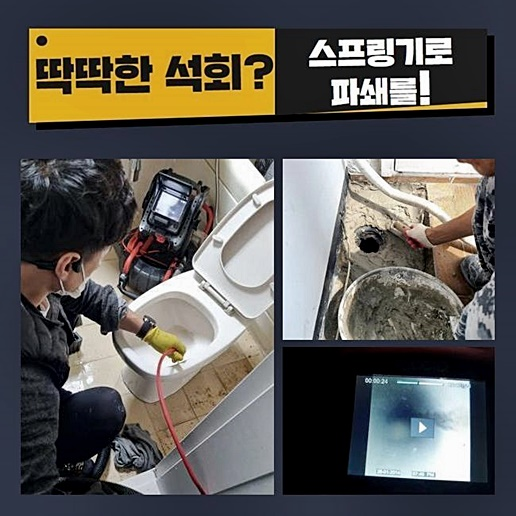
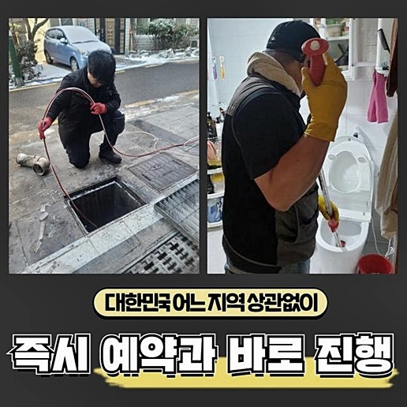
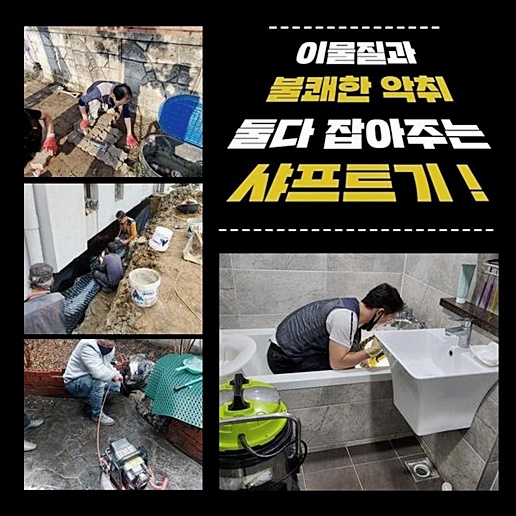
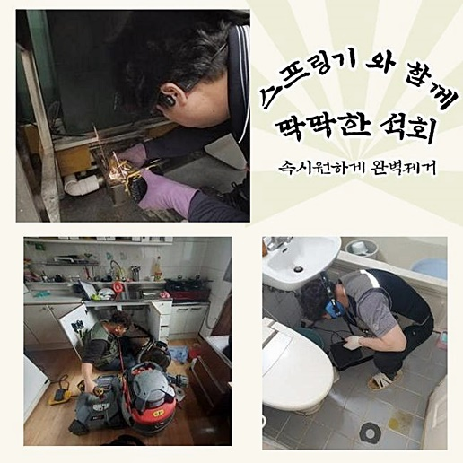
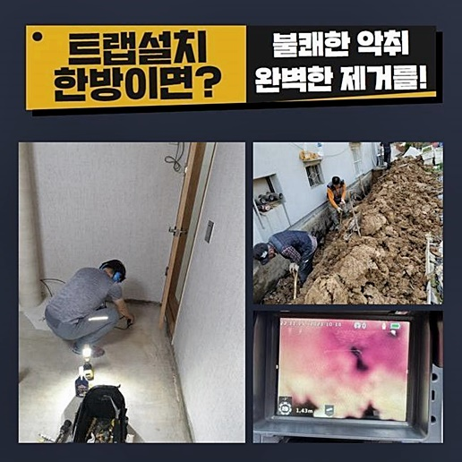
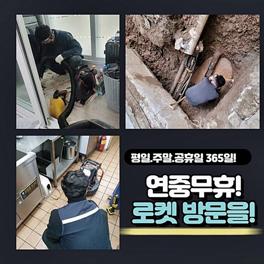
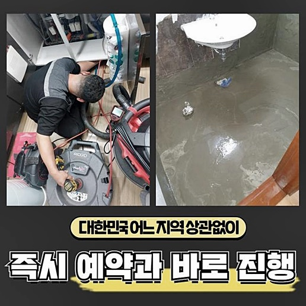

🏠 양평 양서면세탁실막힘 개군면 횡주관청소 설비하는곳
용인 하수구막힘 전문 시공 후기

📋 작업 개요
- 위치: 용인
- 서비스 유형: 하수구막힘, 배관막힘, 집수정막힘, 역류해결, 뚫는업체, 배관청소, 고압세척, 설비공사
- 작업 일시: 2024. 6. 16. 6:47
- 업체명: 하수구수사대 (010-5615-2118)
🔍 문제 상황
양평 양서면세탁실막힘 개군면 횡주관청소 설비하는곳
갑자기 하수도에서 고장이 나타났던 때가 적게나마 존재했을 거라 예측합니다
집 내부에 있는 하수관이 물이 유출되는 상황이 되어 파이프 개통을 감행해 나가셨던 증험 역시 간접적으로나마 있었을 가능성이 높은데요
배관 안에 이물이 들어가면 초기 1~2년 정도는 별 문제가 나타나지 않지만 지속해서 누적되면 물막힘이 일어나는 거예요
욕실사용이 안된다면 삶의 질 하락 속도가 증가하게 돼요
장애가 일어난 하수관을 처치하려고 나무막대도 투입해보고 여러 약제 등도 적용해 보았는데 변화가 없었다면 배수구 처치를 도맡는 사람에게 신속하게 문의하여 처치할 것을 권장해요
방관은 되레 고장을 좋지 않게 변모시킬 수 있단 걸 놓치시면 차후 문제가 커질 수 있답니다
금일은 배관 클리닝에 관한 정보들과 급작스런 역류의 사태 가운데 적절하게 조처하는 요령을 말씀드리겠습니다
이번 방문 처소같이 막힘으로 고초를 겪고 있다면 심도있는 처치가 불가결하답니다
말씀드릴 내용은 고객님의 급박한 요구에 부응하여 즉각 내방드렸던 곳이예요
제조설비 측면에 있는 배관이 막히는 바람에 업무에 차질을 빚고 있다고 하셨어요
현장에 가보니 관이 깊었고 막힌 곳이 멀었답니다 수리가 순탄지 않을 것이라는 점을 예상하였어요
즉각 조치를 해야 했기 때문에 파이프의 일부 구간을 관통해보기로 했어요

🔎 원인 분석
💡 전문가 진단: 정밀 진단 장비를 사용하여 슬러지의 고착 여부를 판명하고 타격/세척 작업을 실시했습니다.
물흐름이 전연 실현되지 않았기에 앞이 안보이는 상황이었답니다
이로인해 정밀한 막힘 원인 규명이 힘들기에 내시경 촬영설비로 관찰하기로 마음먹었어요
배관 안에 노폐물이 꽉 차 있었죠 가까이서 보았더니 산업용 기름찌꺼기였답니다
사장님께서 어제도 분해용 약제를 자주 넣어보았으나 뚫리는 기미는 목격할 수 없었던 상황입니다 관 내의 유동성이 멈추었을 정도로 기름덩이가 전체를 점유하고 있었어요
내시경카메라를 접근시켜 보았더니 사각집수정에서부터 시관파이프까지 결부된 부분에 문제가 생겨 액체가 넘쳐흘렀던 것입니다
예상한 것보다 넓은 부위에서 경화된 찌꺼기들로 메워 있었답니다
가공품을 생산하는 과정에서 발생한 유분으로 이루어진 찌꺼기가 상당해보였어요
의뢰자께 중앙부근의 배수구를 타공하는 게 빠른 해결책임을 제시하고 순차적인 프로세스를 고지한 뒤 업무에 들어갔답니다
전체적인 업무와 관련한 재가를 받은 뒤 실내의 하수처리관에서부터 야외로 노출된 시관로에 이르기까지 뚫음을 시행했죠
노폐물의 양이 상당하였기에 초기 작업을 한 다음에 주변에 연계된 배수관도 도구를 사용해서 개문해내야 해요
이땐 플렉스샤프트기기를 가동하여야 되는데요 해당 기기는 머릿부분의 쇠사슬이 회전해나가며 관 내에 정착한 찌꺼기 일체를 파쇄하는 노릇을 하고 있어요
간혹 의뢰자께서 고RPM으로 가동되면서 배관 내측에 문제가 생기지 않을까 문의할 때도 있는데요
미숙한 능력을 토대로 어설프게 접근하게 된다면 그런 상황이 생겨날 수 있겠으나 우리와 같이 숙련성이 입증된 인원들에겐 부합하지 않다는 것을 설명드립니다
배수관카메라를 통하여 내부 상황을 진단해가며 막힌 부분과 까닭을 알아낸 뒤 시공절차에 들어가게 됩니다

🔧 작업 과정
일터에서 배출되는 탁수에 들어간 잔재들이 가득히 채워진 상황이었죠
샤프트기기를 이용해 쓰레기들을 없애나가는 걸 호기심있게 쳐다보시더니 이제 해결의 기미가 보인다고 말하셨어요
긴 구간이었으나 굴착부위를 통해서 꼼꼼하게 작업을 이행했어요
특정한 물건을 제조하는 공간에선 기름을 쓸 수밖에 없으며 다양한 동기들로 인해서 성분들이 서로 엉기기 때문에 관리 시스템이 작동된다고 하여도 이렇게 막힘과 역류가 일어나기도 합니다
다량의 쓰레기들을 배출시켰더니 보통이 아닌 작업인 것 같다면서 만족스러워 하셨답니다
생산공장 전체적으로 배수가 안되는 사태로 발전한 것은 공장의 바깥에 설비된 배관쪽에서 막힘이 발생하였기 때문이죠
배수에 문제가 나타난다면 전 근무자에게 불편을 초래하죠 다양한 쓰레기물질들이 겉에서도 나타날 정도로 상당하게 누적되어 있었는데요
장기간 세정과 관련한 업무를 하지 않았다 말하시더라고요
이에따라 배수구를 통해 여러가지의 유분이 유입되었다는 사실을 간파할 수 있었답니다
건조물의 연식이 오래되었기에 하수관도 낙후되었을 여지가 있는데요
설비가 노화되는 현상 역시 막힘이 발생할 때 위험요소라고 볼 수 있어요
찌꺼기들이 고착화되면 물흐름을 막기 때문에 배수관 벽면에 압력을 가할 수 있고 부식이 생겼었던 지점에서는 물이 새나갈 수도 있어요
파이프 속의 쓰레기들을 샤프트 공구를 가동시켜 충족히 처치 가능했으므로 추가적인 세정작업은 생략할 수 있었어요
플렉스샤프트를 통하여 이물들을 전체적으로 없애는 업무를 실시하였어요
일상 가운데 배수관관리가 제대로 안된 곳은 쉬이 막힘이 일어나고 물이 역행할 수도 있답니다
물이 올바르게 밖으로 배출되지 않고 상시와 이질감이 느껴진다고 하면 늦지 않게 저희와 같은 베테랑에게 연락을 취하시는 것이 나아요
한번 정체가 생겼던 데는 점차적으로 사태의 수준이 심중해질 가망이 높죠
빠른 해결에 초점을 맞추는 것도 중요하겠으나 좋은 전문가를 만나는 부분도 필수적이죠
제반시설은 충분한지와 실력 등을 알아보시는 것이 좋습니다
충분한 경력과 제반설비 이 두가지를 충족한다면 복잡한 고장이 일어났더라도 처리가 가능합니다
저희팀은 온전하게 시공이 이행될 수 있게끔 최신 기기들을 갖추고 있습니다
뚫음시공에 마땅한 도구들을 이용할 수 있게끔 석션기기를 포함한 전문 기계들을 세팅한 후에 문의자의 공간으로 출장갑니다


✅ 작업 완료
슬러지들을 떠미는 방안으로 시작하고 배관전용cctv를 동시에 넣어서 내측에 이물들이 잔재하는지 여부를 체크하고 세척을 이행하죠
이러한 수순으로 공사를 받아보신다면 쉬이 슬러지가 누적되지 않아서 재발에 대한 사안은 거의 없다고 생각하셔도 무방합니다
보는 바와 같이 이물들이 남김없이 소멸되었답니다
특별한 문제가 일어난 게 아니라해도 정기적인 예방 시공을 진행하는 경우도 많답니다
예약하신 시간에 늦지 않게 내방해 드리며 이른 아침에도 근무하고 있으니 고심하지 말고 전화해 주십시오
내팽개치지 말고 이상현상이 나타나면 즉각 조치하시는 걸 권해드리는 바입니다




⚠️ 하수구 배관 막힘 예방 및 관리 가이드
- ✅ 머리카락, 비닐, 물티슈 등 물에 분해되지 않는 이물질은 하수구 유입을 절대 금지해 주세요.
- ✅ 하수구 거름망을 씌우고 모여진 이물질은 주기적으로 쓰레기통에 바로 비워주셔야 합니다.
- ✅ 배관 노후가 심할 경우 이물질이 더 쉽게 걸리므로 주기적인 배관 세척(고압세척 등)을 권장합니다.
- ✅ 작업 후 1년 이내 재발 시 하수구수사대에서 무상 A/S 보증 서비스를 제공합니다.
💡 핵심 정리
- 확실한 장비 작업(내시경 점검 및 샤프트 스케일링)으로 원인을 뿌리 뽑습니다.
- 작업 후 1년 이내에 동일한 부위 재발 시 100% 무상 A/S 서비스를 보장합니다.
- 서울 · 경기 · 인천 전 지역에 24시간 언제든 긴급 출동할 수 있도록 항시 대기 중입니다.
❓ 자주 묻는 질문 (FAQ)
🚨 용인 하수구막힘 문제로 고민이신가요?
정확한 원인 진단과 확실한 시공으로 재발 없는 해결을 약속드립니다.
24시간 긴급 출동 | 서울 · 경기 · 인천 전지역 | 1년 내 재발 시 무상 A/S